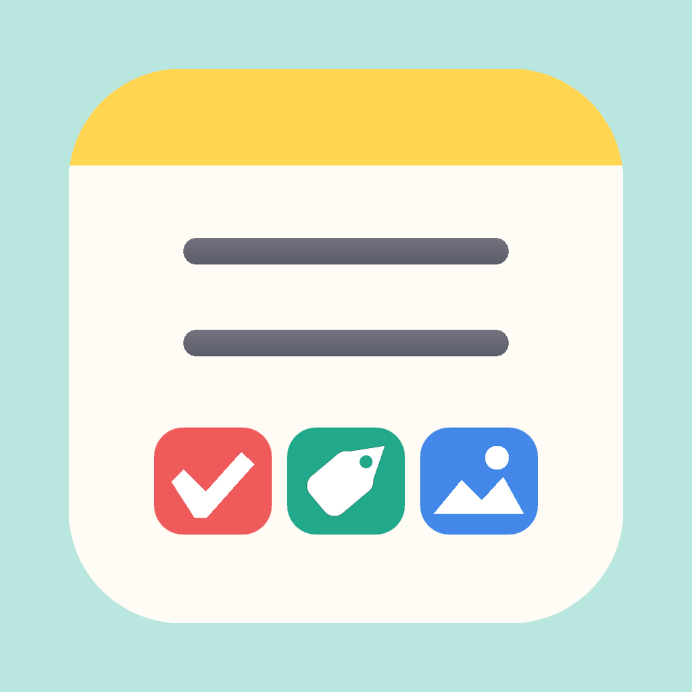
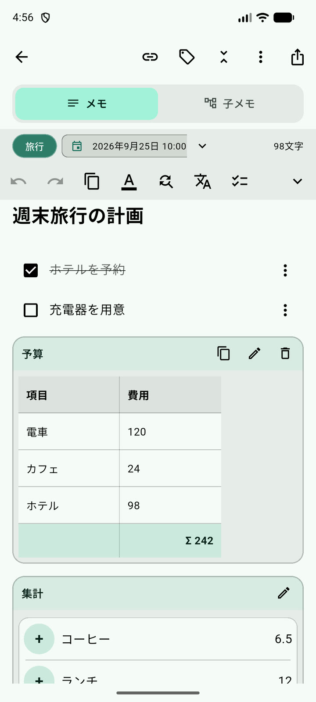
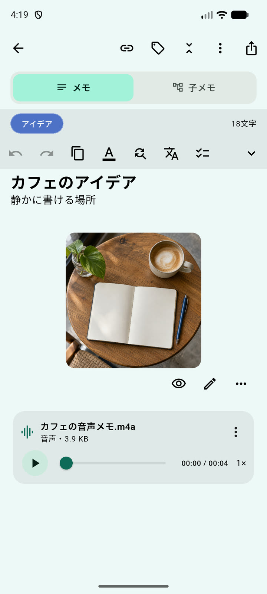
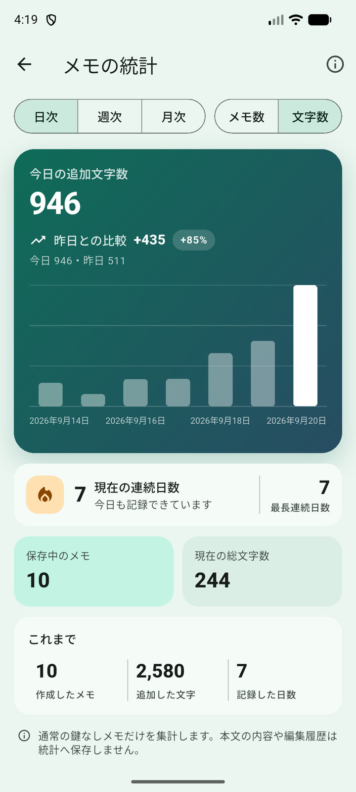
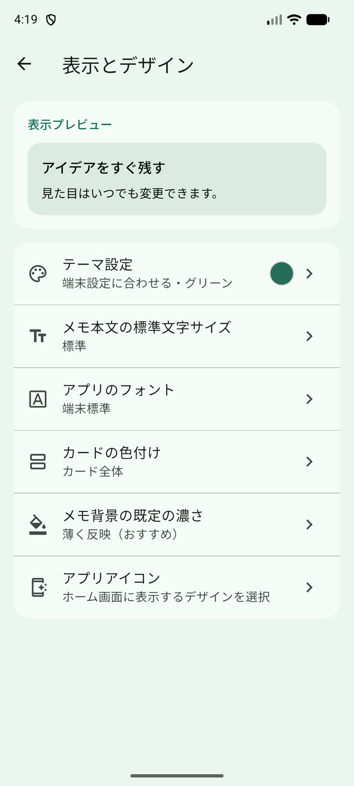
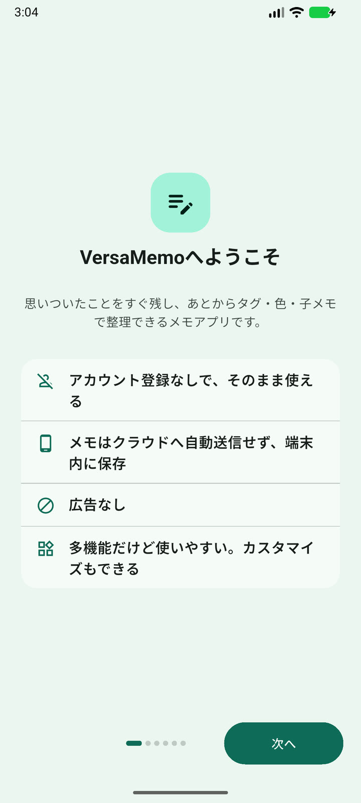
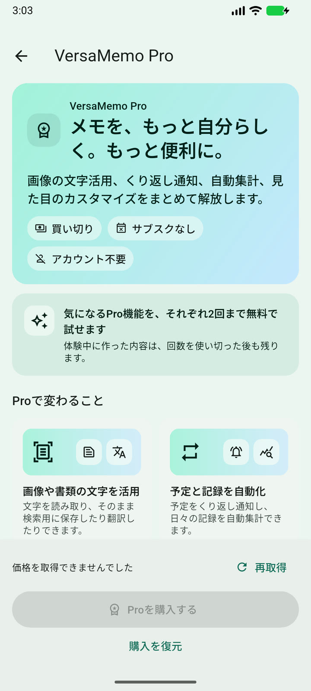

日記やライフログを続けたい
文章から気軽に始め、写真や音声も一緒に残す。記録日数や連続日数も振り返れます。

VersaMemo日記、学習、仕事、お金の記録まで。文章・画像・音声・表・チェックリストを1つのメモで扱えて、カードや階層、カレンダーで整理できます。

こんな人におすすめ
ちょっとしたメモ、画像や音声の保存、仕事のタスク管理や予定の確認まで、用途ごとにアプリを分けずに記録できます。
文章から気軽に始め、写真や音声も一緒に残す。記録日数や連続日数も振り返れます。
資料、読書メモ、会議記録を、タグや最大3階層の親子メモで整理できます。
チェックリスト、予定、タイマー、集計を、関連する文章と離さず記録できます。
画像、手書き、ボイスメモを文章と同じメモに置き、話題ごとにまとめて見返せます。
実際の画面で見るVersaMemo
最初から多くの機能を使う必要はありません。まずは文字だけで書き留めて、必要になったときだけ表や画像、音声などを足せます。
文章、チェックリスト、表、画像、手書き、PDF・テキストファイル、ボイスメモを1つのメモにまとめて記録できます。タイマーや集計結果も文脈と一緒に残せます。

最大3階層の親子メモで、増えた情報のまとまりを保てます。一覧・カード・カレンダーを切り替え、タグ、色、予定、関連メモ、複数条件の検索で探しているメモをすぐに見つけられます。
記録日数、文字数、現在・最長の連続日数を端末内で振り返れます。

テーマ、フォント、カード、壁紙、本文色、アプリアイコンまで選べます。

記録したあとも、メモの中で
写真の中の文字を読み取ったり、文章を翻訳したりするときに、別のアプリを開き直す必要はありません。
写真に写った文字を端末上で読み取り、確認してから本文や検索に使えます。
必要な言語モデルを入れたあと、選択範囲を端末上で翻訳できます。
対応するiPhoneでは、保存したボイスメモを端末内で編集できる文章へ変換できます。
他アプリから共有された内容を確認して保存。メモはZIP形式でまとめて書き出せます。
数字の記録や時間の計測も
表計算ソフトやタイマーアプリを別に開かなくても、文章と同じメモのなかで数字や時間を記録できます。
行と列を作って数値を入力すると、合計や項目の掛け算を自動で計算します。
勉強や作業の時間をメモ画面でそのまま計測し、書いていた内容と一緒に残せます。
毎日のメモを支える機能
書き留めた予定を通知したり、ホーム画面に置いたり、見られたくないメモを隠したりと、日常の場面に対応できます。
メモに予定日時を設定してリマインダーを受け取れます。定期的な予定の繰り返し通知にも対応しています。
よく見るメモやチェックリストを端末のホーム画面に配置して、アプリを開かずにすぐ確認できます。
アプリ全体のロックだけでなく、特定のメモだけをロックしたり、一覧から隠したりできます。

アカウントなしで始められる
VersaMemo専用アカウントは不要です。メモと添付ファイルは初期状態で端末内へ保存され、作成・編集・検索はオフラインでも使えます。
アプリ・メモロックは画面へのアクセスを制限する機能で、保存データそのものを暗号化するものではありません。端末内バックアップはアプリ削除時に失われる場合があるため、端末外へ残す場合はZIPを書き出してください。外部ZIPには任意でパスワードを設定できます。
データの扱いを詳しく見るVersaMemoPRO
プレミアム機能・買い切り基本のメモ機能は無料です。対象のPro機能は区分ごとに2回まで体験し、自分に必要だとわかってから、利用しているOSのストアで買い切り購入できます。
基本のメモ・チェックリスト・表、カードと階層、カレンダー、1メモ1枚の画像、音声メモ、ウィジェット、バックアップ。
壁紙・フォント、2枚目以降の画像・高度な画像編集、OCR・翻訳、繰り返し通知・関連メモ・集計など。
体験で作った内容は、回数を使い切った後もそのまま使えます。価格はアプリ内のストア表示をご確認ください。

知っておきたいこと
はい。メモの作成・編集・検索・端末内バックアップの利用に、VersaMemo専用アカウントは必要ありません。
はい。まずは通常の文章をすぐに書けます。カード、階層、タイマー、画像、計算などは最初から必須ではなく、必要になったときだけ追加できます。
現在は対応していません。メモは端末内へ保存し、端末内バックアップや持ち出せるZIPを書き出せます。iCloud Drive・Google Driveへの直接自動バックアップと複数端末同期は現在は対応していません。
基本のメモ機能は無料です。一部の高度なカスタマイズ、画像、文字読み取り、翻訳、繰り返し通知、関連メモ、記録・計算機能には、区分ごとの無料体験とVersaMemo Proがあります。
いいえ。アプリロックとメモロックはVersaMemo内でのアクセスを制限しますが、データベース、添付ファイル、端末内バックアップ、ホーム画面ウィジェットの内容を暗号化するものではありません。外部へ書き出すZIPは、別の機能として任意でパスワード保護できます。
サポートページでよくある質問とメール窓口を確認できます。問い合わせ時にメモ本文が自動で含まれることはありません。
App Store・Google Playで配信中
アカウント登録は不要で、広告もありません。基本機能は無料で使えて、Pro機能も必要になってから試せます。